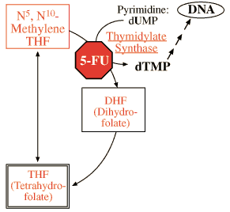

B12/Folate Problem set
Question 6: Folate in the synthesis of dTMP
Tutorial to help answer the questionHuman thymidylate synthase can be effectively and specifically inhibited by administration of:
A. uridylate (dUMP) B. trimethoprim C. 5-fluorouracil (5-FU) D. sulfanilamide (a sulfa drug) E. methotrexate (MTX)
Tutorial
Lets take the answers in turn:
| A. | uridylate (dUMP) is one of the reactants, and so would not inhibit the reaction. | ||
| B. | trimethoprim only works on bacteria (we will see what it does later in this module) | ||
| C. | 5-fluorouracil is the correct answer, but the actual inhibitor is 5-fluorouridylate (F-dUMP in the notes). 5-fluorouracil mimics the size and shape of thymine. What then happens is that salvage enzymes reattach a ribose and phosphate group to it to make F-dUMP. This compound, in turn, inhibits thymidylate synthase because of its resemblance to dTMP, the product of the thymidylate synthase reaction - see Fig. 6 at right. What we therefore have here is the product (or, in this case, a fake product) feedback inhibiting its own synthesis. |  | ||
| D. | a sulfa drug Like trimethoprim, these drugs inhibit a bacterial enzyme, in this case for the synthesis of folate (and not for synthesis of thymidine, which makes it a wrong answer). More about sulfa drugs: bacteria rely on their own synthesis of folate and thus presumably do not take up premade folate very easily. This, plus the fact that humans do not even have the synthetic enzymes for making folate, make this an ideal choice for an antibiotic! | ||
| E. | methotrexate (MTX) This drug, a very famous and early chemotherapy drug, does not inhibit thymidylate synthase directly (or specifically). However, what it does do is prevent dihydrofolate (DHF), one of the products of thymidylate synthase, from being recycled back to THF. Ultimately, then, by its general obstruction of folate recycling, it may deprive thymidylate synthase of its required folate cofactor. (But it is still a wrong answer since this is not a specific inhibiton.) The next question will explain more about dihydrofolate recycling... | ||


Department of Biochemistry and Molecular Biophysics
The University of Arizona
January 31, 2000
Contact the Development Team
http://biology.arizona.edu
All contents copyright © 2000. All rights reserved.